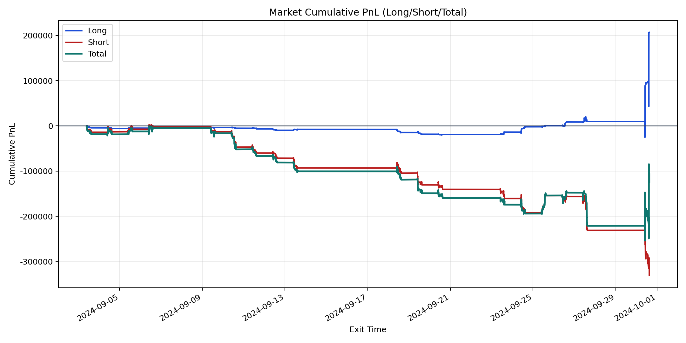
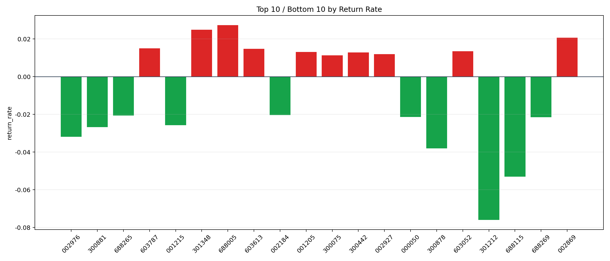

| repo_root | /home/haoranyou/data/output/alpha0.4_1w_5s_3ticks |
|---|---|
| period_months | 1 |
| period_label | 2024-09-03_to_2024-09-30 |
| start_time | 2024-09-03 09:50:12 |
| end_time | 2024-09-30 15:00:01 |
| n_trades | 56544 |
| n_symbols | 2162 |
| total_pnl | -123953.99589999925 |
| long_total_pnl | 206811.65620000006 |
| short_total_pnl | -330765.6520999993 |
| total_entry_notional | 532865377.0 |
| long_entry_notional | 92931841.0 |
| short_entry_notional | 439933536.0 |
| total_return_rate | -0.00023261784542627406 |
| long_return_rate | 0.0022254122373406987 |
| short_return_rate | -0.0007518536893263789 |
| top_symbols_by_return | ["688005", "301348", "002869", "603787", "603613", "603052", "001205", "300442", "002927", "300075"] |
| bottom_symbols_by_return | ["301212", "688115", "300878", "002976", "300881", "001215", "688269", "000050", "688265", "002184"] |

